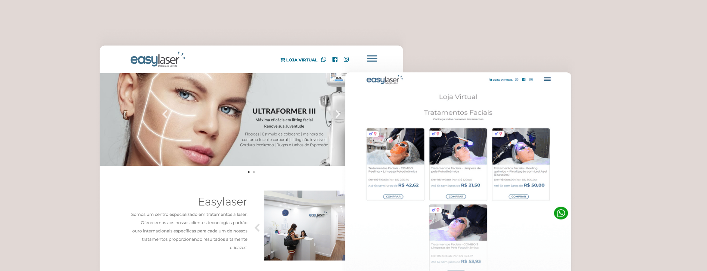
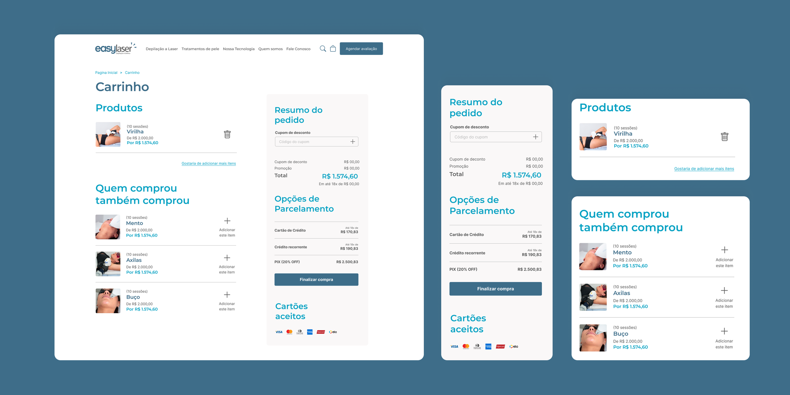

A EasyLaser é uma clínica de estética a laser no Rio de Janeiro, com a depilação a laser como principal serviço. Usuários abandonavam o carrinho por acharem a página de tratamento confusa, e o agendamento das sessões dependia inteiramente do WhatsApp. Este foi um projeto prático com cliente real, feito individualmente durante o curso Design Circuit, com sessões semanais de crítica de design.
EasyLaser is a laser aesthetics clinic in Rio de Janeiro, with laser hair removal as its main service. Users were abandoning their cart because the treatment page felt confusing, and session scheduling depended entirely on WhatsApp. This was a practical project with a real client, done individually during the Design Circuit course, with weekly design critique sessions.

01 — O Problema
01 — The Problem
Pesquisa de mercado, análise de concorrentes e uma survey com usuários confirmaram o que a EasyLaser já sentia na prática: gente desistindo antes de comprar.
Market research, competitor analysis, and a user survey confirmed what EasyLaser was already feeling in practice: people giving up before they bought.
02 — A Solução
02 — The Solution
Uma plataforma responsiva e direta, com nova navegação, novo fluxo e um layout redesenhado do zero — preservando a essência e a qualidade da marca.
A responsive, straightforward platform, with new navigation, a new flow, and a layout redesigned from scratch — while preserving the brand's essence and quality.

Uma nova arquitetura de informação (validada com card sorting) e um campo de busca substituem o PDF de FAQ e o menu confuso de antes.
A new information architecture (validated with card sorting) and an on-site search field replace the old FAQ PDF and confusing menu.

Depois da compra, o cliente escolhe e garante o horário da avaliação direto no site.
After purchase, the client picks and confirms their evaluation slot directly on the site.

O cliente escolhe comprar uma sessão única ou montar um combo com desconto, sem depender de um pacote fechado.
Clients choose to buy a single session or build a discounted combo, without being locked into a fixed package.

Tanto as dúvidas sobre contraindicações quanto sobre os procedimentos são respondidas sem sair do site — pelo chat, pela página do produto ou pela seção de perguntas frequentes — no lugar de depender do WhatsApp.
Questions about both contraindications and procedures are answered without leaving the site — through chat, the product page, or the FAQ section — instead of relying on WhatsApp.

Avaliações dos clientes diretamente na PDP, endereçando o medo apontado na pesquisa.
Customer reviews directly on the PDP, addressing the fear flagged in the research.

O antigo não garantia nenhum controle ao usuário e tinha o fluxo quebrado — foi redesenhado e ganhou upsell de assets complementares para aumentar o ticket médio de compra.
The old one gave users no control and had a broken flow — it was redesigned and gained complementary upsell assets to increase the average order value.
03 — O Processo
03 — The Process
Sem me aprofundar em cada técnica — o essencial foi entender a dor antes de desenhar, e validar de novo depois.
Without diving into every technique — the essential part was understanding the pain before designing, and validating again afterward.
Pesquisa de mercado, análise de concorrentes e uma survey com 11 pessoas mostraram o mesmo padrão: medo e falta de informação sobre o tratamento, e frustração com um agendamento lento.
Market research, competitor analysis, and a survey with 11 people all pointed to the same pattern: fear and lack of information about the treatment, and frustration with slow scheduling.
Testes de usabilidade no site existente confirmaram o problema na prática: usuários se perdiam no fluxo e não achavam preços nem o botão de agendamento pelo WhatsApp.
Usability testing on the existing site confirmed the problem in practice: users got lost in the flow and couldn't find pricing or the WhatsApp booking button.
Um novo mapa de jornada e user flow guiaram a nova categorização (validada com card sorting) e o wireframe, sempre respeitando a identidade visual já existente da EasyLaser.
A new journey map and user flow guided the new categorization (validated with card sorting) and the wireframe, all while respecting EasyLaser's existing visual identity.
Com a nova UI em alta fidelidade, um novo teste de usabilidade mostrou que a maior parte da fricção original tinha sido resolvida — os usuários notaram e reconheceram a diferença.
With the new UI in high fidelity, a follow-up usability test showed that most of the original friction had been resolved — users noticed and recognized the difference.
04 — Aprendizados e Meu Papel
04 — Learnings and My Role
Sem métricas de negócio — é um projeto de curso, sem acesso aos dados reais de conversão — mas com aprendizados concretos sobre processo.
No business metrics here — this was a course project, without access to real conversion data — but with concrete learnings about process.
Projeto individual: pesquisa de mercado e concorrentes, survey, testes de usabilidade, análise heurística, jornada do usuário, arquitetura de informação, wireframe e UI final (mobile e desktop) — com sessões semanais de crítica de design ao longo do curso.
Individual project: market and competitor research, survey, usability testing, heuristic analysis, user journey, information architecture, wireframing, and final UI (mobile and desktop) — with weekly design critique sessions throughout the course.
Próximo projeto
Next project